Chấm mù A/B, đợt 2
Ba đề mới, mỗi đề hai bản do hai agent cùng model Opus làm độc lập. Một bản làm theo skill design-kit, bản kia làm như Opus mặc định. Nhãn X và Y được đặt lại theo khoá mới, khác với đợt trước.
Cách chấm: với mỗi đề, chọn bản thấy đẹp hơn và dễ dùng hơn.
Điểm máy đo và đáp án sẽ công bố sau khi chủ chấm xong.
Kết quả đợt 2 (chủ chấm 09/11/2026)
X là bản design-kit ở cả 3 đề, đặt ở cột trái để cân với đợt 1 (đợt 1 đặt ở cột phải).
| Đề | Chủ chọn | X: design-kit | Y: Opus mặc định |
|---|---|---|---|
| Landing piano | X: design-kit | 0 cứng, 0 mềm | 18 cứng, 24 mềm |
| Dashboard tiệm bánh | Y: mặc định | 0 cứng, 1 mềm | 8 cứng, 1 mềm |
| Cài đặt tài khoản | Ngang nhau | 0 cứng, 0 mềm | 7 cứng, 2 mềm |
Gộp hai đợt (6 đề): design-kit thắng 4, mặc định thắng 1, hoà 1. Trong đợt 2, chủ chọn bên trái 1 lần, bên phải 1 lần, hoà 1 lần, nên kết quả đợt 1 không phải do thiên lệch vị trí. Về máy đo: các bản mặc định có tổng 45 lỗi cứng, các bản design-kit có 0.
Vì sao bản mặc định thắng ở đề tiệm bánh (suy luận từ ảnh, chưa hỏi chủ):
- Bản mặc định dùng tông nâu ấm hợp tiệm bánh. design-kit chọn hướng Đêm chỉ vì đây là "dashboard", nên ra màu xanh ngọc lạnh.
- Bản mặc định để nguyên liệu và lịch giao ở cột bên, nhìn một lần thấy hết. Bản design-kit đẩy hai khối đó xuống dưới bảng khi sửa lỗi "thẻ lồng thẻ".
- Luật
cream-palettechặn cứng nền kem, nhưng đây là chuyện khẩu vị, không phải công năng.
Đề 1: Landing lớp piano Phím Ngà
Lớp piano trực tuyến cho người lớn mới học. Có đăng ký học thử, giáo viên, lộ trình, cảm nhận, lịch, học phí, hỏi đáp, form.
X Landing lớp piano Phím Ngà
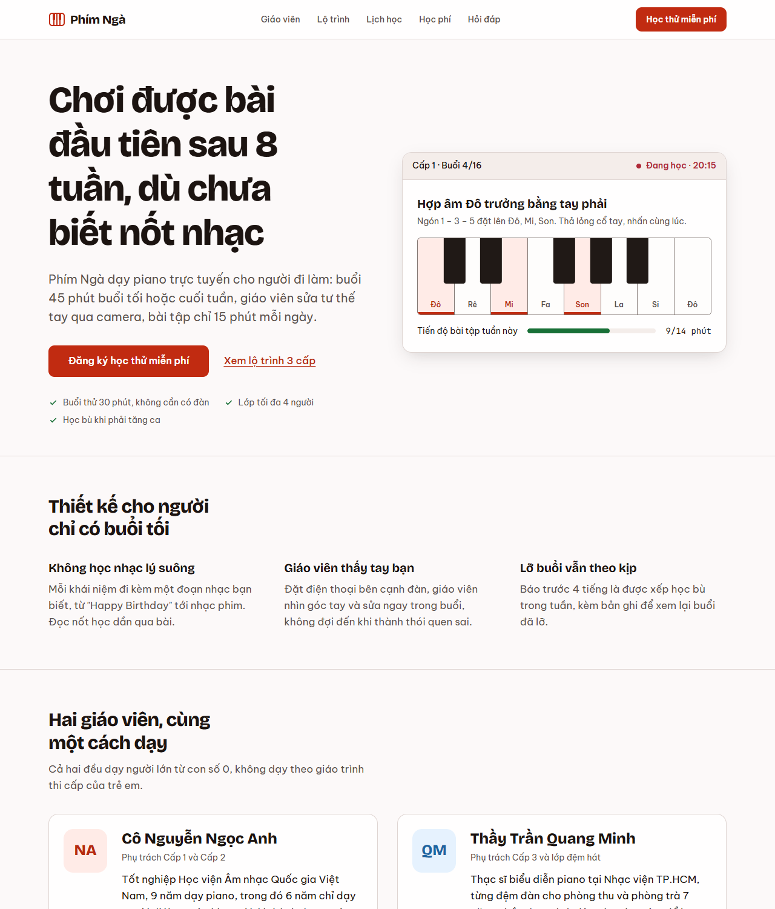
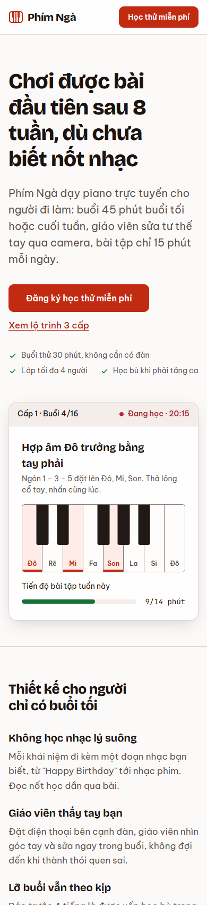
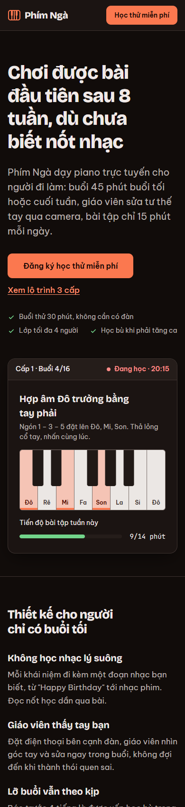
Y Landing lớp piano Phím Ngà
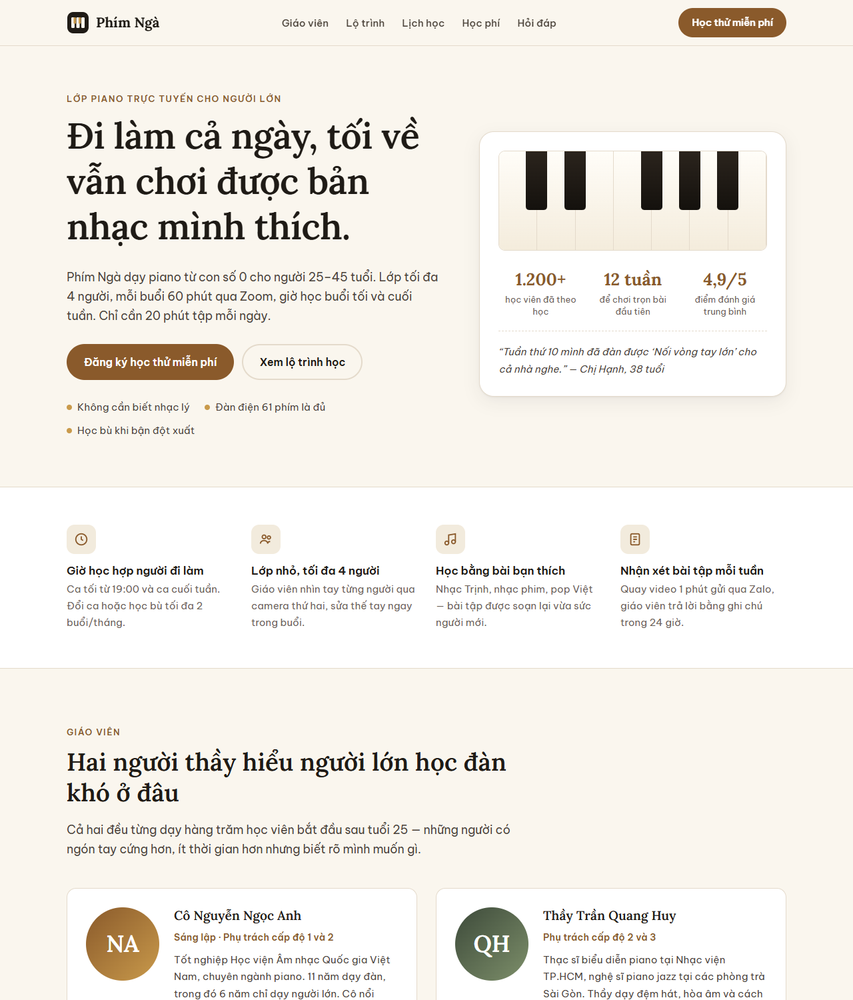

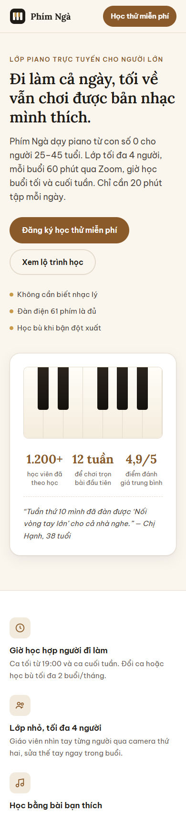
Đề 2: Dashboard tiệm bánh Bánh Mẹ Làm
Đơn hôm nay kèm trạng thái, doanh thu so với hôm qua, nguyên liệu sắp hết, lịch giao, tìm kiếm và tạo đơn.
X Dashboard tiệm bánh Bánh Mẹ Làm
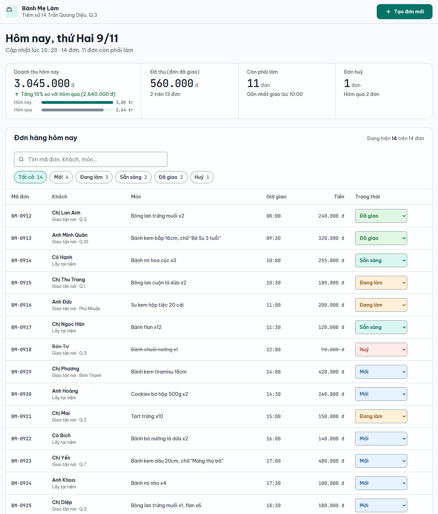
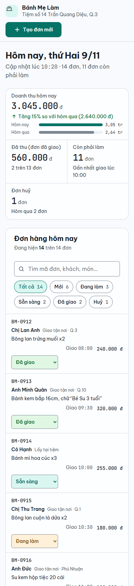
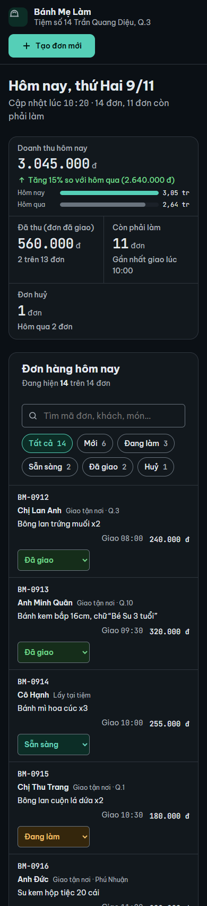
Y Dashboard tiệm bánh Bánh Mẹ Làm
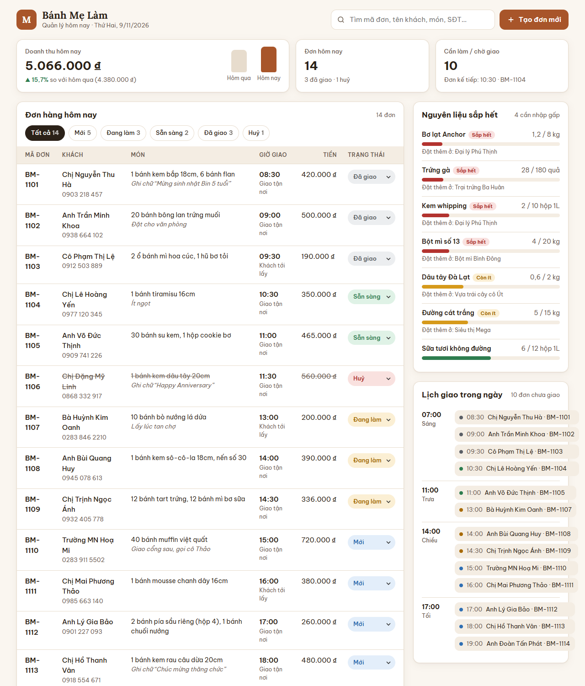
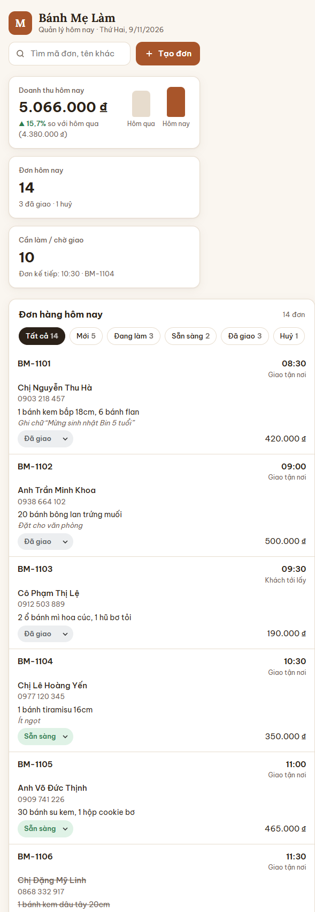

Đề 3: Trang cài đặt app Nói Mỗi Ngày
Hồ sơ, thông báo, bảo mật và thiết bị, gói dịch vụ, xoá tài khoản; có lưu thay đổi.
X Trang cài đặt app Nói Mỗi Ngày
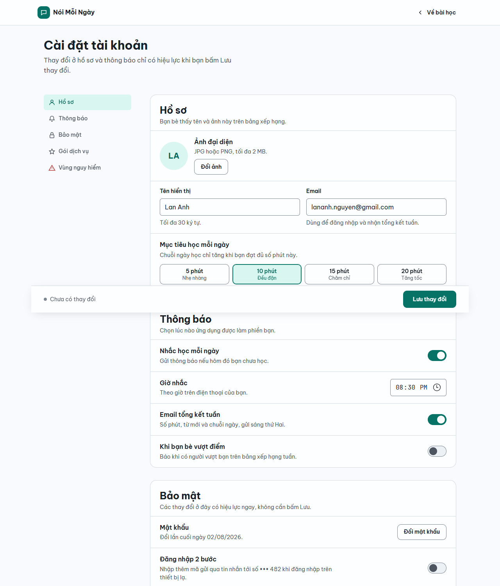
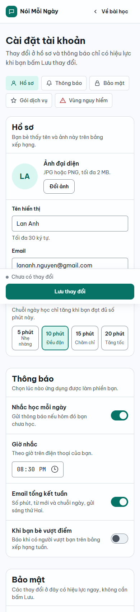
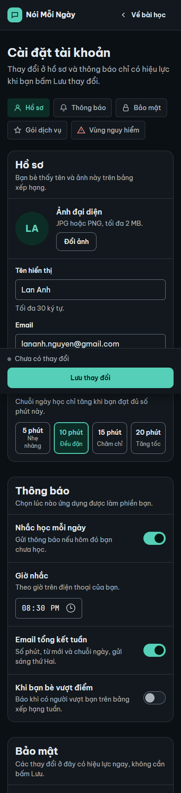
Y Trang cài đặt app Nói Mỗi Ngày
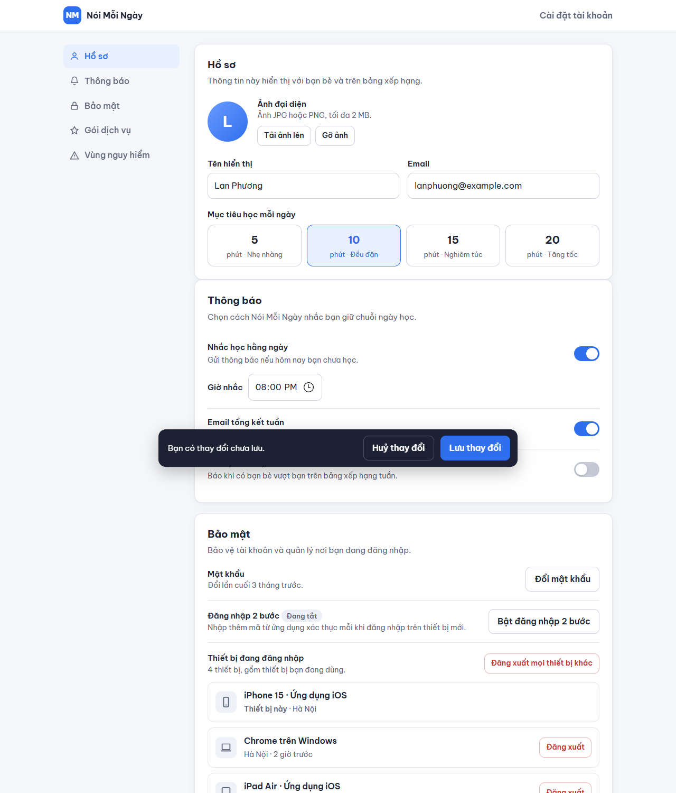

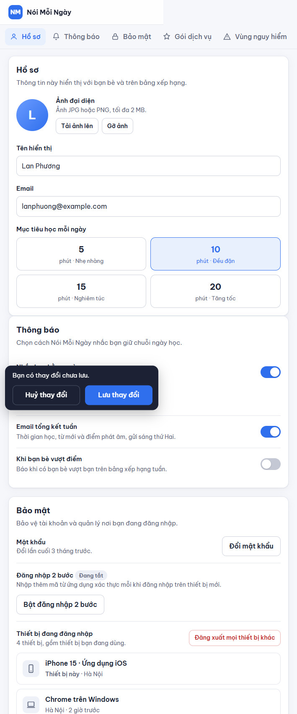